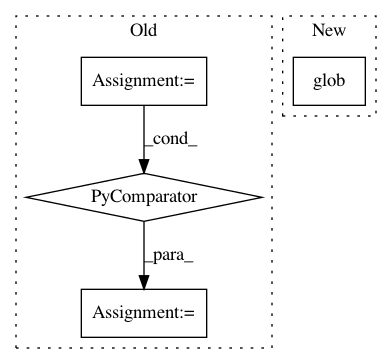

0cc06c8127ce3fc87e53badca9b461481a2b5288,oneoffs/resign_analysis.py,,crawl,#Any#Any#,22
Before Change
bad_resign_files = []
other_thresh = 0.9
sgfs = lambda root,fils: [os.path.join(root, f) for f in fils if f.endswith(".sgf")]
fs = [ i for sublist in [sgfs(root, files) for root, _, files in os.walk(sgf_directory)] for i in sublist]
for filename in tqdm(fs):
data = open(filename).read()
result = re.search("RE\[([BWbw])\+", data)
After Change
bad_resigns = 0
bad_resign_files = []
other_thresh = 0.9
fs = glob.glob(os.path.join(sgf_directory, "**", "*.sgf"), recursive=True)
for filename in tqdm(fs):
data = open(filename).read()
result = re.search("RE\[([BWbw])\+", data)
In pattern: SUPERPATTERN
Frequency: 3
Non-data size: 4
Instances
Project Name: tensorflow/minigo
Commit Name: 0cc06c8127ce3fc87e53badca9b461481a2b5288
Time: 2018-11-12
Author: sethtroisi@google.com
File Name: oneoffs/resign_analysis.py
Class Name:
Method Name: crawl
Project Name: scipy/scipy
Commit Name: a57f565b683e51cde9c4e28fc6c2e4916c0c306e
Time: 2016-04-05
Author: pav@iki.fi
File Name: scipy/spatial/setup.py
Class Name:
Method Name: configuration
Project Name: stellargraph/stellargraph
Commit Name: 7a9c823fa3422e642e779e3ed23e4dda935ee14f
Time: 2019-12-05
Author: andrew.docherty@data61.csiro.au
File Name: scripts/format_notebooks.py
Class Name:
Method Name: